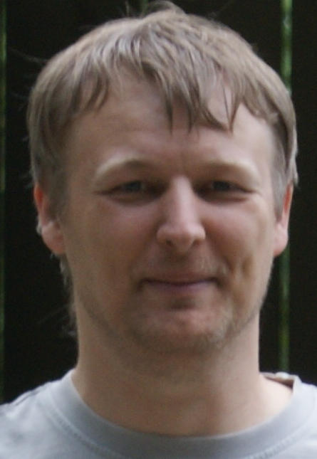

Bert Raeymaekers - BR23
Over de show grasparkieten van Bert Raeymaekers.
Kwekersklasse: Beginner
Voor wat foto's van mijn vogels kijk je best in de Gallerij
Voor de mutaties in m'n stam zie Mutaties/Kleuren
Als je wil weten wat ik al gewonnen heb kan je kijken in m'n trofeeënkast of de showresultaten.
Voor meer informatie of erfelijkheid kijk je best op m'n andere site: http://www.schilduil.org/
Bert

http://